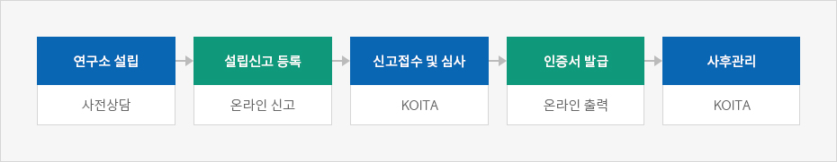
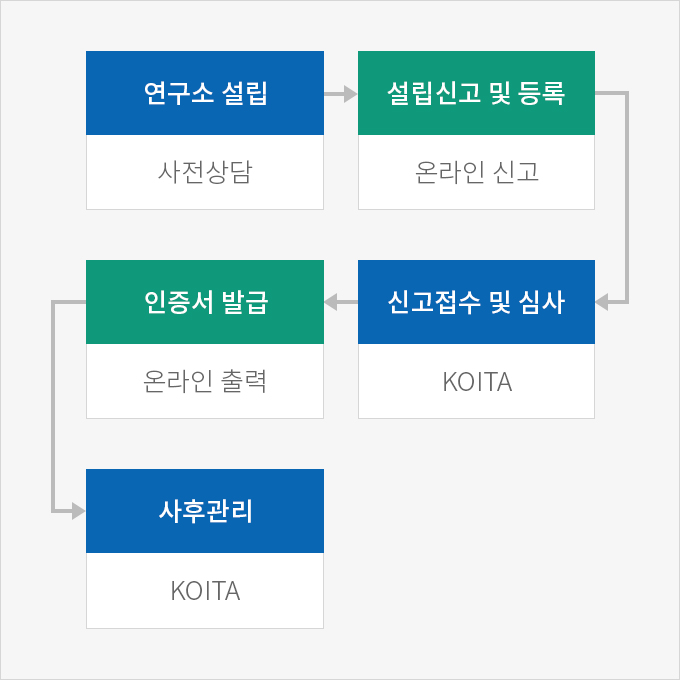
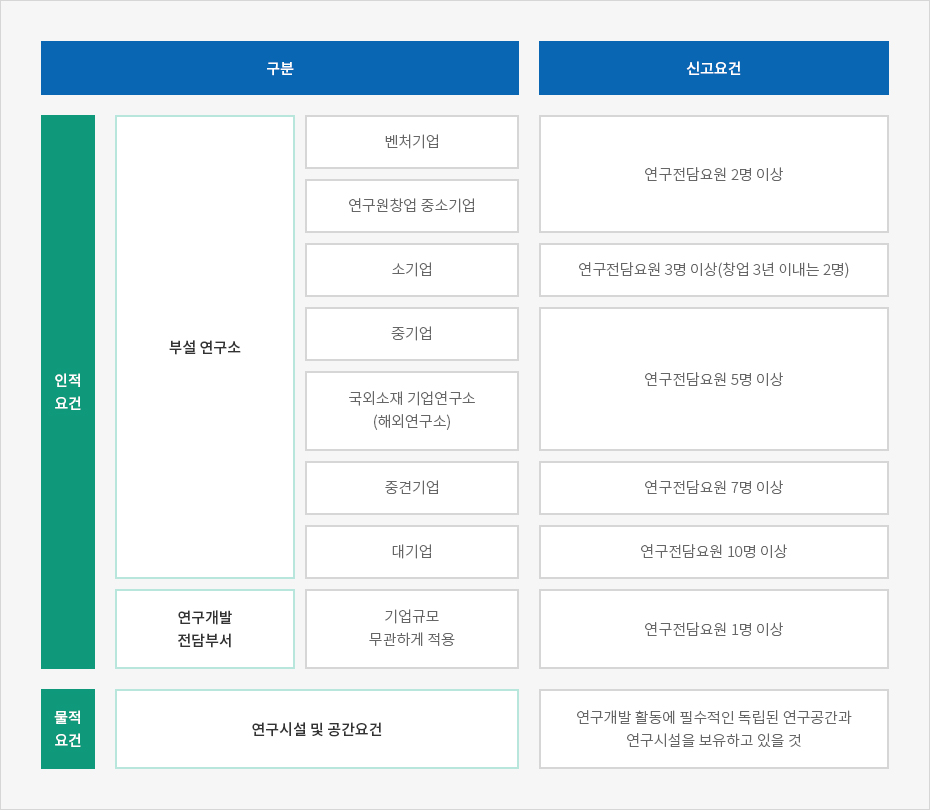

기업부설연구소 등
- Home
- 인센티브
- R&D 센터
- 기업부설연구소 등
일정 요건을 갖춘 기업의 연구소 또는 연구개발전담부서는 (사)한국산업기술진흥협회에 신고 · 등록하여 연구개발 활동에 따른 각종 지원혜택을 받을 수 있다.
※ 현황 : 기업부설연구소 40,693개, 연구개발전담부서 27,787개 (2019년 9월 현재)
※ 관련규정 : 「기초연구진흥 및 기술개발지원에 관한 법률」 제14조의 2, 동법 시행령 제16조의 2
※ 관련규정 : 「기초연구진흥 및 기술개발지원에 관한 법률」 제14조의 2, 동법 시행령 제16조의 2
신고방법
연구소 / 전담부서를 설립한 후 일정요건을 갖춘 상태에서 구비서류를 작성하여 (사)한국산업기술진흥협회(KOITA: Korea Industrial Technology Association)에 신고하여야 한다. 신고는 온라인 시스템을 통해서만 가능하다.
신고절차



- 처리기한 : 신고서가 접수된 날로부터 7일 이내에 처리된다. 단, 신청서 및 관련서류 미비에 의한 기업 측의 보완기간은 처리기간에 산입하지 않는다.
- 연구소 설립 - 사전상담
- 설립신고 등록 - 온라인 신고
- 신고접수 및 심사 - koita
- 인증서 발급 - 온라인 출력
- 사후관리 - koita

문의처
(부설연구소 / 연구개발전담부서 신청) KOITA 연구소인정팀 02-3460-9141~46, 9013~17
인정요건
기업부설연구소 / 연구개발전담부서로 인정받기 위해서는 인적요건과 물적요건을 모두 충족하여야 한다.

| 구분 | 신고요건 | ||
|---|---|---|---|
| 인적요건 | 부설 연구소 | 벤처기업 | 연구전담요원 2명 이상 |
| 연구원창업 중소기업 | |||
| 소기업 | 연구전담요원 3명 이상(창업 3년 이내는 2명) | ||
| 중기업 | 연구전담요원 5명 이상 | ||
| 국외소재 기업연구소(해외연구소) | |||
| 중견기업 | 연구전담요원 7명 이상 | ||
| 대기업 | 연구전담요원 10명 이상 | ||
| 연구개발 전담부서 | 기업규모 무관하게 적용 | 연구전담요원 1명 이상 | |
| 물적요건 | 연구시설 및 공간요건 | 연구개발 활동에 필수적인 독립된 연구공간과 연구시설을 보유하고 있을 것 | |

지원내용
기업부설연구소 / 연구개발전담부서를 등록한 기업은 조세, 관세, 인력, 자금, 판로, 기술 등의 지원을 받을 수 있다.
조세 및 관세지원
| 지원항목 | 관련규정 | |
|---|---|---|
| 연구 및 인력개발비 세액공제 | 일반연구 | 「조세특례제한법」제10조(별표6) |
| 신성장동력 | 「조세특례제한법」제10조(별표7) | |
| 연구개발 및 인력개발 설비투자 세액공제 | 「조세특례제한법」제25조 | |
| 기업부설연구소용 부동산 지방세 감면 | 「지방세특례제한법」제46조 제①항 | |
| 기술이전 및 대여 등에 대한 과세특례 | 「조세특례제한법」제12조 | |
| 외국인기술자 소득세 감면 | 「조세특례제한법」제18조 | |
| 연구개발관련 출연금 등 과세특례 | 「조세특례제한법」제10조의 2 | |
| 연구개발특구 첨단기술기업 등 법인세 감면 | 「조세특례제한법」제12조의 2 | |
| 연구전담요원 연구활동비 소득세 비과세 | 「소득세법 시행령」제12조 제12호 다목 | |
| 산업기술 연구개발물품 관세감면 | 「관세법」 제90조 제1항 제4호 | |
자금지원
| 사업 부처 | 주요 내용 | 관련사업 정보 |
|---|---|---|
| 과학기술 정보통신부 | 기술개발사업지원 |
|
| 산업통상자원부 | 산업등 핵심기술 개발 등 |
|
| 중소벤처기업부 | 신제품 기술개발 사업 등 |
|
인력지원
| 지원항목 | 관련 내용 | 문의처 |
|---|---|---|
| 전문연구요원제도 | 병역대체복무제도 | KOITA 02-3460-9124 |
| 중소기업 연구인력지원사업(채용, 파견) | 연구인력 채용 시 인건비 지원 | KOITA 02-3460-9082 |
| 중견기업 핵심연구인력 성장지원사업 | 연구인력 채용 시 인건비지원 | KIAT 02-6009-35122 |
| 청년내일채움공제 | 청년자산형성지원 | 중소벤처기업부 1357 |
| ICT학점연계 프로젝트 인턴십 | 인턴프로그램 경비지원 | 정보산업연합회 02-2132-0726 |
| 산업전문인력 역량강화사업 | 전문인력양성 지원금 | KIAT 02-6009-4375 |
| 해외고급과학자 초빙(Brain pool)사업 | 유치경비, 연구지원비 | 연구재단 042-869-6377 |
| 고용추천서(Gold Card)제도 | 해외기술인재 고용추천장 | KOTRA 02-3460-7338 |
| 청년 추가고용 장려금 지원 사업 | 채용 장려금 지원 | 고용노동부 1350 |
| 이공계인력중개센터 | 이공계 인력 중개 | KOITA 02-3460-9033 |
기술지원
| 사업 부처 | 주요 내용 | 관련사업 정보 |
|---|---|---|
| 산업통상자원부 | 신뢰성바우처사업(소재개발지원) | www.신뢰성바우처.org |
| 과학기술정보통신부 | K-Global 프로젝트 | k-global@nipa.kr www.nipa.kr |
| 산학연 협력 클러스터 지원 | www.koita.or.kr | |
| 학연 공동 연구소 연계 후속 연구개발사업 | ||
| 중소벤처기업부 | 중소기업 컨설팅 지원 | www.smbacon.go.kr |
| 해외규격인증획득 지원 | www.exportcenter.go.kr | |
| 특허청 | IP-R&D 전략 지원사업 | http://biz.kista.re.kr/ippro |
| 사업화연계 특허기술평가 지원 | www.kipa.org |